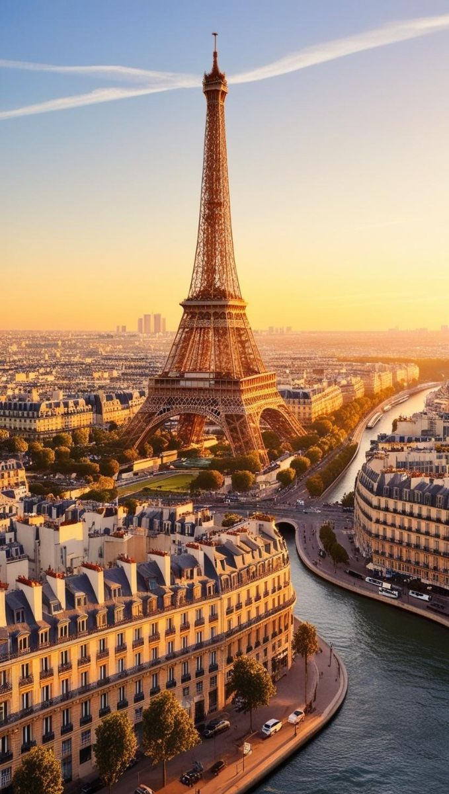
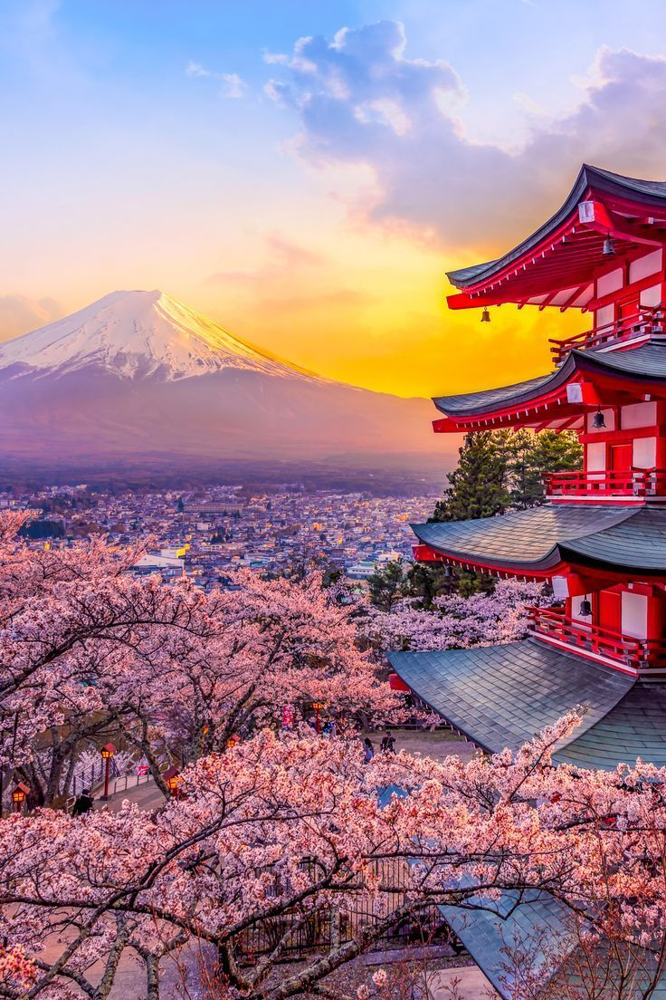
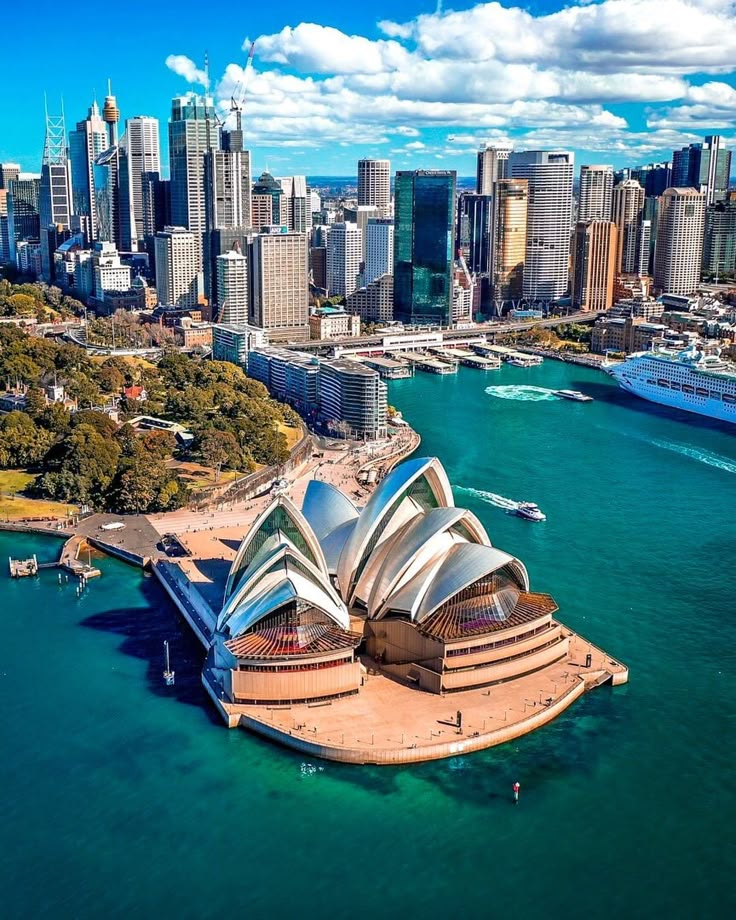

Popular Destinations
Paris, France
Experience the romance and culture of Paris with a visit to the Eiffel Tower, Louvre Museum, and charming cafes. Our Paris packages include guided tours and accommodation in the heart of the city.
Tokyo, Japan
Discover the vibrant blend of tradition and modernity in Tokyo. Explore ancient temples, bustling markets, and cutting-edge technology. Our Tokyo itineraries offer a mix of cultural experiences and city adventures.
Sydney, Australia
Sydney is a city of contrasts, where stunning beaches meet iconic landmarks like the Sydney Opera House and Harbour Bridge. Our Sydney packages include beachside accommodations and exciting outdoor activities.
